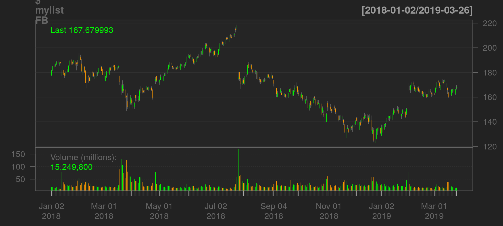

The goal of datrader is to help people do intelligent trading.
You can install the latest bleeding version from this github repository.
library(devtools)
devtools::install_github('doktormike/datrader/datrader')# Load library
library(datrader)
library(ggplot2)
# Download data into a new repository
mypath <- '/tmp'
mytickers <- c('FB', 'MSFT', 'NFLX')
downloadInstruments(instruments = mytickers, path = mypath,
startDate = "2018-01-01")
# Load the data
mylist <- loadExistingInstruments(mypath)
# Plot the Facebook stock
chartSeries(mylist$FB)
This is a basic example which shows you how to create a portfolio in a market. In this setting we fake the market by only loading three instruments from the package itself namely FB, MSFT and NFLX.
# Load library
library(datrader)
library(ggplot2)
library(scales)
library(gridExtra)
# Get data from package
mypath <- system.file('extdata', package = 'datrader')
mylist <- loadExistingInstruments(mypath)
# Define a function for ranking an instrument and selecting it for investment
rankInstrument <- function(x) tail(ROC(Cl(x), n=90), 1)[[1]]
myvol <- function(x) tail(volatility(x, n = 90, calc = 'garman.klass'), 1)[[1]]
selectInstrument <- function(x) rankInstrument(x)/myvol(x) > 0.05
# Create a portfolio from these functions
myport <- createPortfolio(mylist, selectInstrument, rankInstrument, topN=3)
# Display the prices and the portfolio weighting
p1 <- qplot(x=as.factor(1), y=myport, fill=factor(names(myport))) +
geom_bar(stat="identity", width = 1) + coord_polar(theta = "y") +
xlab("") + ylab("") + theme_minimal() +
scale_fill_brewer("Instrument", type = "qual", palette = 6)
p2 <- instrumentListToDataFrame(lapply(mylist, function(x) Cl(tail(x, 100)))) %>%
ggplot(aes(y=value, x=as.Date(date), color=ticker, group=ticker)) + geom_line() +
facet_grid(ticker~., scales="free") + ylab("Price") + xlab("Date") +
theme_minimal() +
scale_x_date(labels = function(x) format(x, "%Y-%m")) +
theme(axis.text.x = element_text(angle=60, vjust=0.5))
grid.arrange(p2, p1, ncol=2)As you can see in the plot this small example focuses on investing in MSFT and NFLX since there has been very low momentum in FB.
We also would like to evaluate a strategy to see how much money it can make us over time. For this purpose the function evaluateStrategy exists. The first example shows a simple strategy which allows us to update our portfolio once every month.
library(datrader)
library(quantmod)
mypath <- system.file('extdata', package = 'datrader')
mylist <- loadExistingInstruments(mypath)
rankInstrument <- function(x) tail(momentum(Cl(x), n=90), 1)
selectInstrument <- function(x) rankInstrument(x) > 5
mystrat <- function(x) createPortfolio(x, selectInstrument, rankInstrument, 50)
mydates <- index(tail(mylist[[1]], 100))
result <- evaluateStrategy(mylist, mydates, mystrat, 30, 10000)The result in this scenario for the last 100 days is 1.0151410^{4} for an investment of 10000. Could be better. So let’s try to do better.
library(datrader)
library(quantmod)
mypath <- system.file('extdata', package = 'datrader')
mylist <- loadExistingInstruments(mypath)
rankInstrument <- function(x) tail(momentum(Cl(x), n=90), 1)
selectInstrument <- function(x) rankInstrument(x) > 5
mystrat <- function(x) createPortfolio(x, selectInstrument, rankInstrument, 50)
mydates <- index(tail(mylist[[1]], 300))
result1 <- evaluateStrategy(mylist, mydates, mystrat, 30, 10000)
result1
#> $Value
#> [1] 19599.98
#>
#> $Cash
#> [1] 362.7203